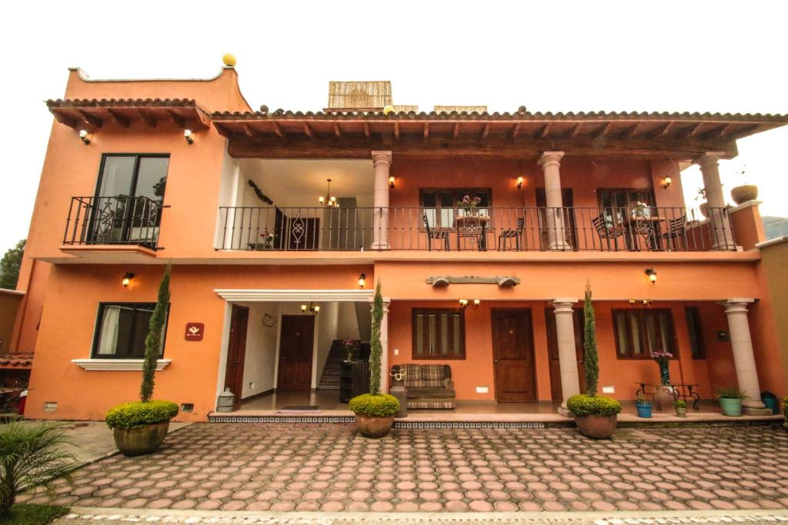
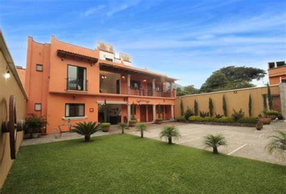

Posada Campestre "La Hacienda Vieja"
Escápate al corazón de Tepoztlán con encanto rural y tranquilidad total.
⬅️ Volver a HospedajeDetalles del Hospedaje
📍 Ubicación: Tepoztlán, Morelos
🌐 Sitio Web: Facebook Oficial
☎️ Teléfono: +52 739 395 1190
🏡 Estilo: Posada campestre tradicional
Sobre la Posada
"La Hacienda Vieja" es una acogedora posada familiar ubicada en un entorno rural rodeado de montañas, ideal para relajarse y reconectar con la naturaleza.
Cuenta con habitaciones rústicas, jardines amplios, alberca y un ambiente que combina tranquilidad, tradición y hospitalidad tepozteca.
Galería


Una experiencia rural auténtica en el Pueblo Mágico de Tepoztlán.